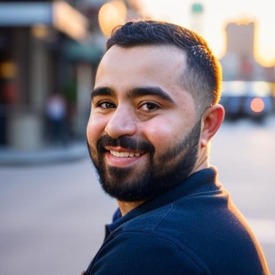

Senior QA Engineer · San Francisco, CA
I've shipped quality across mobile apps, web platforms, and enterprise systems — from Xbox campaigns to podcast apps to financial newswires. Now I'm bringing that precision to AI systems.

Previously at
Highlights
4th Annual Shorty Awards · Campaign for Games
A campaign where fans teamed up with one Facebook friend to detonate explosive wall etchings revealing the game's story. Tigran served as QA Engineer on the award-nominated campaign website, built at AKQA for Xbox.
1.7M+
Individual interactions in 30 days
1.3M
Pre-orders — a franchise record
3M+
Copies sold in the first week
$1,000+/month saved at Stitcher
Optimized QA processes through automation improvements, reducing monthly spend significantly
~100% QA effectiveness on major migration
Achieved near-perfect coverage on a critical platform migration with zero production regressions
Sole QA engineer retained through acquisition
Chosen as the only QA to see ExactTarget's social hub through its final phase after acquisition
Currently learning
AI Quality Engineering
Experience
Business Wire
Senior QA Engineer
Jul 2022 – Jan 2024 · San Francisco
QA Engineer · Jul 2019 – Jul 2022
Stitcher
QA Engineer
Oct 2015 – Jul 2019 · San Francisco
ExactTarget
QA Engineer
Oct 2012 – Apr 2015 · San Francisco
AKQA
QA Engineer
Jan 2011 – Oct 2012 · San Francisco
Associate QA Engineer → QA Intern · Mar 2009 – Jan 2011
Skills
AI & Emerging
Test Automation
Certifications
Education
Stavropol State University
B.S. Mathematics & Computer Science
2003 – 2008